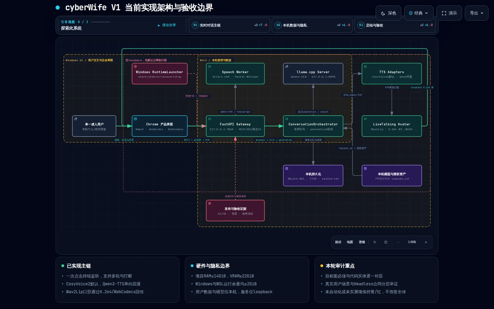
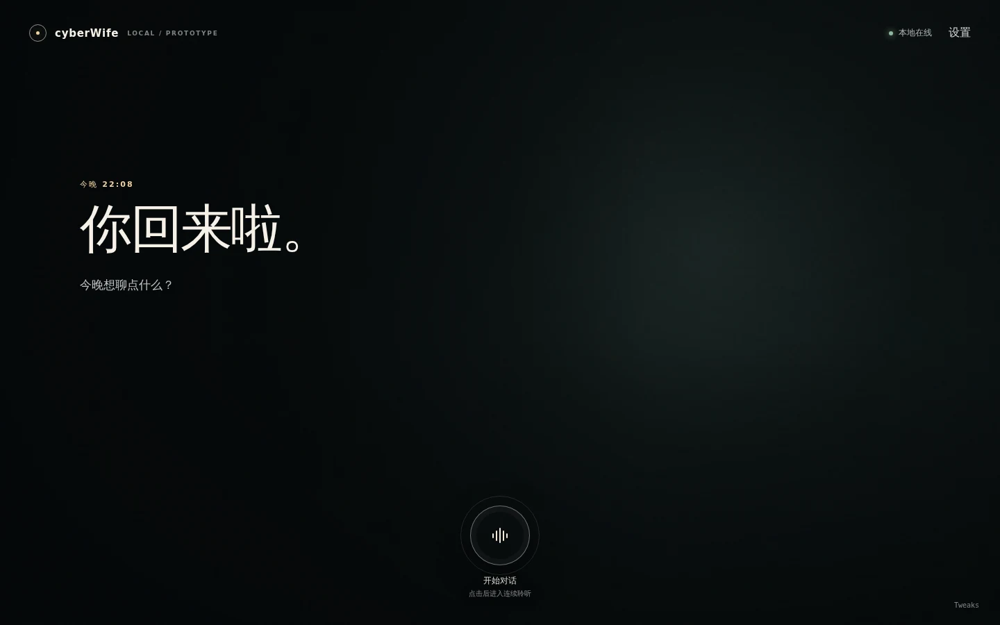
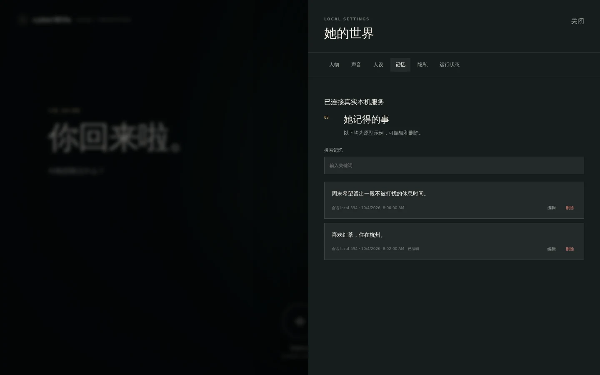
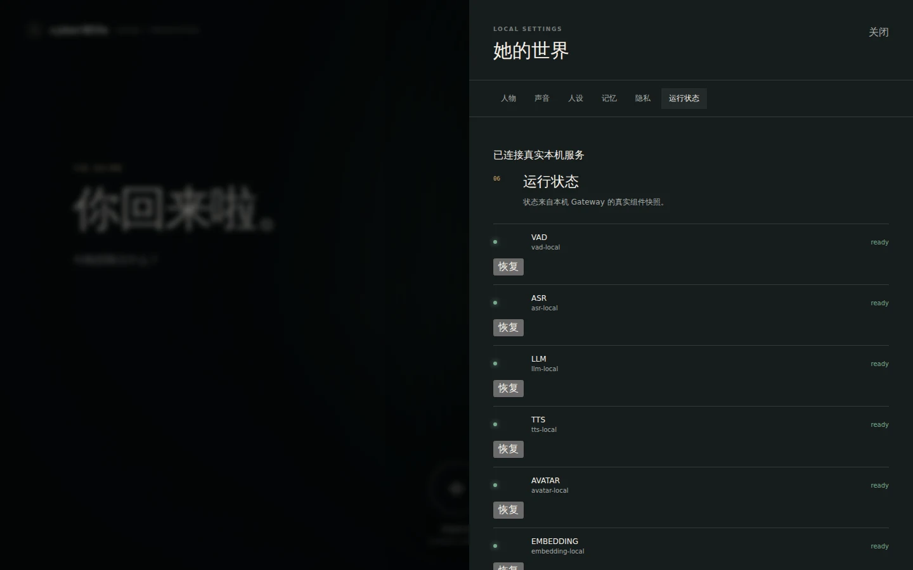
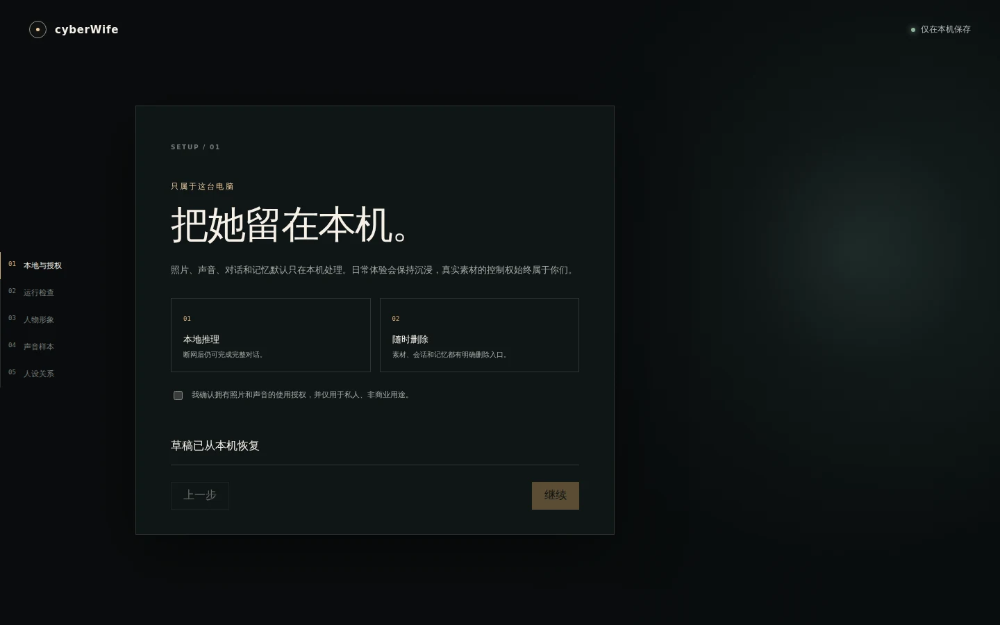
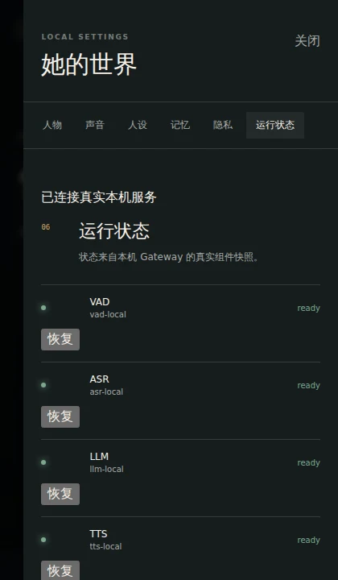

快速自动化
348 passed
后端 326 + 根验收 4 + Avatar 9 + Playwright 9；另有 WSL 环境 4 项 PowerShell skip。
cyberWife 的真实模型、记忆隐私、Avatar 和打断主体成立；但本轮60分钟复验触发 Windows 可用内存硬门，阶段验收必须判 FAIL。
自动化覆盖擅长证明状态、数据、取消和资源；真人感知与全新环境不能由 mock、截图或旧报告代替。
* G3 使用用户批准的替代方法：loopback + 出站白盒 + 运行期连接采样；不宣称等价于物理断网。
数据面已经贯通，主要偏差不是“模型没接上”，而是 Application 层仍直接依赖 Infrastructure 具体类。

旅程不是“接口存在”即通过；这里明确标出真实用户入口和感知证据的缺口。
五步、草稿续接、授权门、真实运行检查、人物与声音版本回退均已实现。
Chrome getUserMedia 虚拟麦克风注入授权真实 WAV，驱动 ASR→LLM→TTS→Avatar；generation fence 阻断旧轮次，插话恢复监听。
搜索、编辑、删除、全清、本次不记录、30天清理、loopback 与出站检查。
Avatar/TTS 降级、单服务重试、同页恢复和重复 start/stop 已覆盖。
真实 Windows Chrome 媒体入口、真实模型和 Avatar；正文只保留 SHA-256，逐事件原始证据留在本机忽略目录。
Chrome getUserMedia → AudioWorklet → 20ms PCM → Gateway → VAD/ASR → transcript.final → llama.cpp 流式文本 → CosyVoice PCM → 浏览器播放确认；同一 PCM → Wav2Lip → Annex-B H.264 → WebCodecs/canvas。打断时 generation 作废并清理 LLM、TTS、音频源与 Avatar 队列。
| event_seq | 归属 | 事件 | 可验证状态 |
|---|---|---|---|
| 1 | session | state.changed | listening / ws_connected |
| 2 → 8 | turn 1 | transcript.final → thinking → speaking → reply.text.final | 正文哈希存在 |
| 593 → 594 | turn 1 | reply.audio.complete → state.changed | 播放完成，回到 listening |
| 595 → 600 | turn 2 | transcript.final → thinking → speaking → reply.text.final | 第二轮生成开始 |
| 835 → 836 | turn 2 | barge_in.detected → turn.cancelled | 旧 generation 作废 |
| 837 → 842 | turn 3 | transcript.final → thinking → speaking → reply.text.final | 插话后新轮接续 |
| 1157 → 1158 | turn 3 | reply.audio.complete → state.changed | 播放完成，回到 listening |
| 1159 → 1165 | turn 4 | transcript.final → thinking → speaking → reply.text.final | 第四轮生成开始 |
| 1664 → 1665 | turn 4 | reply.audio.complete → state.changed | 严格递增并回到 listening |
证据：audit/v1/B5/B5.4A-conversation-final/result.json（本机不入 Git）。独立打断矩阵为早/中/晚各10次、30/30通过，静音P95=2.6ms、旧generation音频=0、Avatar重连=0、decoder backlog=0。
每行来自本轮 actions.json；时长包含该真实模型动作从输入到完成/取消的处理时间。整轮最终仍因 Windows 宿主余量硬门判 FAIL。
| 轮次 | 类型 | 耗时(ms) | 事件数 | 结果 |
|---|---|---|---|---|
| 1 | 完整 | 9,856.766 | 340 | PASS |
| 2 | 完整 | 12,408.846 | 529 | PASS |
| 3 | 打断 | 5,603.915 | 9 | PASS |
| 4 | 完整 | 7,579.890 | 290 | PASS |
| 5 | 完整 | 9,168.225 | 430 | PASS |
| 6 | 打断 | 6,180.913 | 9 | PASS |
| 7 | 完整 | 7,156.676 | 260 | PASS |
| 8 | 完整 | 9,180.022 | 318 | PASS |
| 9 | 打断 | 5,627.762 | 10 | PASS |
| 10 | 完整 | 7,978.063 | 318 | PASS |
| 11 | 完整 | 10,734.814 | 483 | PASS |
| 12 | 打断 | 5,920.905 | 9 | PASS |
| 13 | 完整 | 8,977.881 | 346 | PASS |
| 14 | 完整 | 8,729.517 | 406 | PASS |
| 15 | 打断 | 5,597.103 | 9 | PASS |
| 16 | 完整 | 14,881.668 | 753 | PASS |
| 17 | 完整 | 8,662.819 | 342 | PASS |
| 18 | 打断 | 5,922.866 | 10 | PASS |
| 19 | 完整 | 9,019.165 | 376 | PASS |
| 20 | 完整 | 8,486.797 | 372 | PASS |
| 21 | 打断 | 5,928.424 | 10 | PASS |
| 22 | 完整 | 11,343.946 | 511 | PASS |
| 23 | 完整 | 10,660.868 | 451 | PASS |
| 24 | 打断 | 5,399.554 | 9 | PASS |
| 25 | 完整 | 6,884.326 | 222 | PASS |
| 26 | 完整 | 9,721.902 | 448 | PASS |
| 27 | 打断 | 4,967.652 | 9 | PASS |
| 28 | 完整 | 11,385.435 | 493 | PASS |
| 29 | 完整 | 8,475.977 | 340 | PASS |
| 30 | 打断 | 6,110.539 | 10 | PASS |
所有人物区域已脱敏。截图只承担 UI 合同证据，不承担真实模型性能结论。





能证明路由、组件、布局、状态文案和基本交互符合已冻结 UI 合同；不能证明截图中的“就绪”来自真实探针，也不能证明音质、口型或延迟。
目标机脚本生成独立 audit 目录，记录模型事件、轮次、资源采样、生命周期和退出码；仓库只提交脱敏总结，不提交用户素材、权重或原始 audit。
测试按 Python 包边界分开执行，避免两个顶层 tests 包在同进程发生导入遮蔽。
| 范围 | 结果 | 覆盖重点 | 判断 |
|---|---|---|---|
| Backend | 326 passed 4 skipped | API、状态机、适配器、存储、隐私、生命周期合同 | 通过；skip 为 WSL 无 PowerShell |
| Stage contracts | 4 passed | soak 判定器、发布冻结 | 通过 |
| Avatar | 9 passed | worker、调度与媒体输出 | 通过；不替代口型感知验收 |
| Playwright | 9 passed | 三尺寸 axe、焦点、状态播报、减少动效 | 自动化子集通过；不替代真实读屏 |
| Production build | PASS | 23 modules | 通过 |
| Windows scripts | AST PASS | launcher、llama、主机解析、总验收 | 语法通过 |
| 60分钟真实组合 | FAIL / exit 2 | 20完整+10打断全PASS；RAM 13,637.863MiB；GPU 12.479GiB；Windows余量最低1,840.566MiB | 2GiB宿主余量硬门失败 |
| ID | 真实场景 | 证据与结果 | 本轮判断 |
|---|---|---|---|
| AC-01 | 五步首次设置、草稿续接、授权 | 隔离 Chrome 5/5；真实 API/SQLite | 通过 |
| AC-02 | 人物/声音版本、预览、激活、回退 | 真实文件、403授权阻断、激活故障回滚 | 通过 |
| AC-03 | 连续语音对话 | 真实模型 20/20；浏览器媒体链另有完整事件记录 | 通过 |
| AC-04 | 普通缓存未命中首响 | 30/30；历史候选 P95=6.175s≤7s | 通过 |
| AC-04A | 严格问候缓存 | 3/3命中、P95=14ms；24负例与版本失效0误命中 | 通过 |
| AC-05 | 早/中/晚插话 | 30/30；静音P95=2.6ms；旧generation音频0 | 通过 |
| AC-06 | Avatar媒体、降级、原页恢复 | 双FPS≥25、三周期恢复≤0.54s | 功能通过；A/V量化缺失 |
| AC-07 | 形成并召回长期记忆 | 真实BGE/SQLite/sqlite-vec、来源与token预算 | 通过 |
| AC-08 | 编辑、删除、全清与事务回滚 | 源记录/FTS/vector/meta原子一致，删除后0召回 | 通过 |
| AC-09 | 创建时/会话中开启不记录 | 业务表增量0、原始音频增量0、WAL归零 | 通过 |
| AC-10 | 29/30/31天保留与故障重试 | 隔离真实SQLite/sqlite-vec、可控时钟 | 通过 |
| AC-11 | 三尺寸、键盘、读屏、减少动效 | axe/焦点/aria-live/reduced-motion 9/9 | 自动化子集通过；真人读屏未验 |
| AC-12 | LLM/Speech/Avatar/Gateway故障恢复 | 4组件×3轮=12/12；同页恢复、无假ready | 通过 |
| AC-13 | 本机边界、出站、日志与原始音频 | 真实5轮、连接采样、白盒出站0、敏感命中0 | 批准替代门通过 |
| AC-14 | 60分钟、20完整+10打断、生命周期 | 721样本；对话30/30；Windows最低余量1,840.566MiB；stop×2归零 | FAIL；recover因硬门失败未执行 |
以下不是润色项，而是 PRD 或目标架构中尚未获得同等级证据的承诺。
api_gateway.py 与 turn_pipeline.py 直接导入具体 repository、asset store、logger 和 metrics。模型 adapter 边界成立，但 NFR-07 只能判部分通过。
已有 FPS、降级恢复和媒体合同，没有 A/V drift、口型主观质量、真实麦克风 20 轮与真实读屏全旅程。
当前目标机 start×2 / recover / stop×2 已有证据；全新 Windows+WSL 从依赖安装到首次开聊尚未独立复现。
根目录与 backend 都有顶层 tests 包，合并收集会遮蔽模块。分开运行不影响测试结果，但发布工具应提供真正的一条命令。